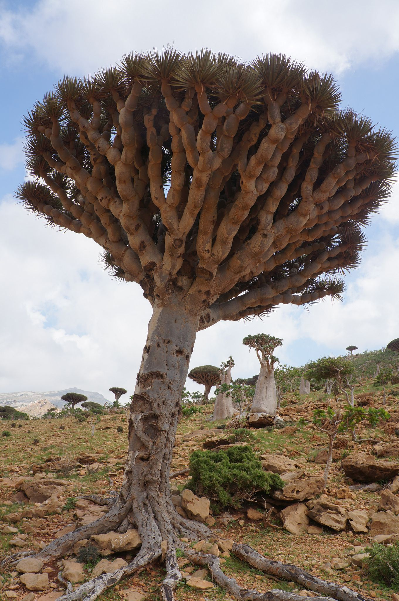

Flor'Insolite
Découvrez des plantes aux caractéristiques inattendues !
Connexion
Forum
Retour
Dragonnier de Socotra

Nom scientifique :
Dracaena cinnabari
Famille :
Asparagaceae
Genre :
Dracaena
Description
Dracaena cinnabari est l’un des rares arbres de l’île de Socotra. Il croît naturellement entre 150 et 1 600 m d'altitude, principalement vers 600 m dans des régions montagneuses fréquemment enveloppées de brouillards.
Il produit de l’ombre, des fruits et de la fraicheur pour les animaux de l’île. Il offre un refuge pour les nids d’espèces d’oiseaux endémiques à l’île, comme la buse, le hibou petit-duc ou l’étourneau de Socotra.
Dracaena cinnabari est une des espèces de dragonniers qui produit la résine appelée sang-dragon dont on se sert dans certaines médecines traditionnelles ou comme colorant.
Source :
Wikipédia
Localisation
Île de Socotora
Photos de la communauté
Binetôt vous pourrez poster ici vos propres photos du spécimen en question ! (uniquement pour les utilisateurs ayant un compte)
e